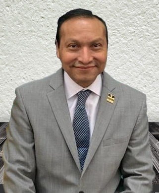

On behalf of the Organizing Committee, it is a pleasure to invite you to the World Congress of
Internal Medicine that will take place on December 2-5, 2020 in Cancun, Quintana Roo, Mexico.
The congress objective is to promote scientific knowledge, collegiality and friendship among
Internal Medicine doctors from all over the world.
The main topic of the congress will be “Present and Future of Internal Medicine”. The Mexican
Organizing Committee, along with ISIM and many other international societies are preparing an
amazing scientific program with the participation of world experts and will have a variety of
academic delivery formats to allow diversity in presentations and learning; these will include
keynote lectures, symposia, open forums, workshops, expert discussion, scientific oral abstract
presentation, etc. The collaborative nature of the meeting has the intention to have a strong
influence and steer the pathway of the future of Internal Medicine in the second quarter of this century.
In addition to the strong academic and scientific collaboration and experience, we also want
you to enjoy the incomparable hospitality of Mexico. Henceforth, we have prepared a formidable
sociocultural program that will offer the beauty of Mexico - radiant sun, turquoise blue sea,
white sand, ancient Mayan rituals, diverse dances regions of our country, visits to majestic
archaeological zones, without missing the traditional Mexican gastronomy considered by UNESCO
as intangible cultural heritage of Humanity, due to its unique aromas, flavors and richness.
Please come and join us at the World Congress of Internal Medicine.
We are looking forward to give you the warmest welcome in Cancun!
Sincerely,
Alfredo Cabrera Rayo MD
